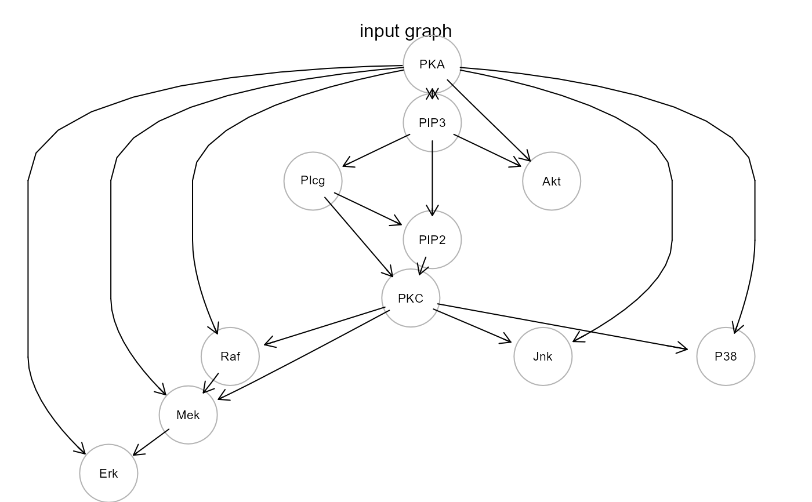
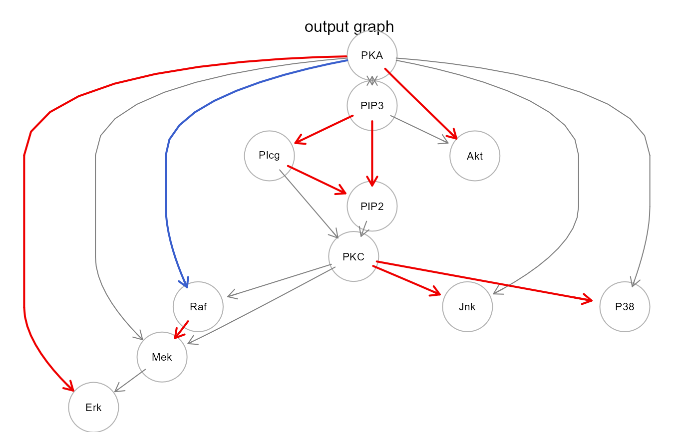

Wrapper for function renderGraph of the R package Rgraphwiz.
gplot(
graph,
l = "dot",
main = "",
cex.main = 1,
font.main = 1,
color.txt = "black",
fontsize = 16,
cex = 0.6,
shape = "circle",
color = "gray70",
lty = 1,
lwd = 1,
w = "auto",
h = "auto",
psize = 80,
...
)An igraph or graphNEL object.
Any layout supported by Rgraphviz. It can be one among:
"dot" (default), "neato", "circo", "fdp", "osage", "twopi".
Plot main title (by default, no title is added).
Main title size (default = 1).
Main title font (default = 1). Available options are: 1 for plain text, 2 for bold, 3 for italics, 4 for bold italics, and 5 for symbol.
Node text color (default = "black").
Node text size (default = 16).
Another argument to control node text size (default = 0.6).
Node shape (default = "circle").
Node border color (default = "gray70").
Node border outline (default = 1). Available options include: 0 for blank, 1 for solid line, 2 for dashed, 3 for dotted, 4 for dotdash, 5 for longdash, and 6 for twodash.
Node border thickness (default = 1).
Manual node width (default = "auto").
Manual node height (default = "auto").
Automatic node size (default = 80).
Currently ignored.
gplot returns invisibly the graph object produced by Rgraphviz
gplot(sachs$graph, main = "input graph")

sem <- SEMrun(sachs$graph, sachs$pkc)
#> NLMINB solver ended normally after 10 iterations
#>
#> deviance/df: 188.9368 srmr: 0.1037022
#>
gplot(sem$graph, main = "output graph")
